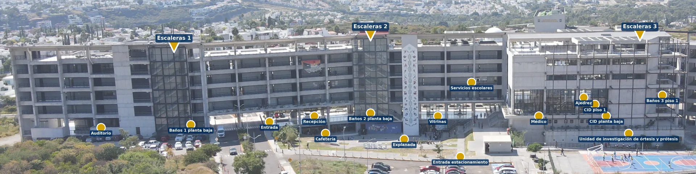

1. 📍 Estás en: selecciona tu ubicación actual.
2. 🎯 Vas a: elige tu destino.
3. Haz clic en Trazar Ruta.
Este sistema modela la infraestructura de la escuela usando la Teoría de Grafos: cada salón, escalera, baño o área común se representa como un nodo, y los pasillos que los conectan como aristas con un peso igual a la distancia aproximada en metros entre ambos puntos.
Para encontrar el camino exacto, utiliza el Algoritmo de Dijkstra, que explora todas las conexiones posibles entre tu ubicación actual y tu destino, y selecciona la combinación de tramos cuya suma de distancias sea la menor posible, considerando incluso cambios de piso a través de escaleras.
El mapa que ves no es una simulación: corresponde a la distribución real del edificio de la ENES Juriquilla, por lo que la ruta trazada refleja el camino que efectivamente recorrerías a pie dentro del plantel.
